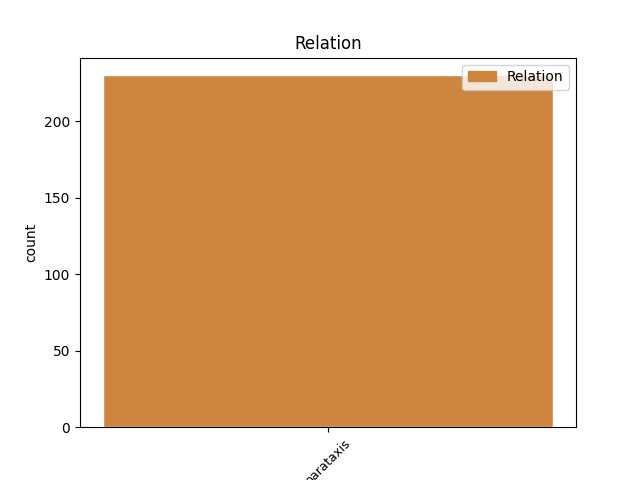
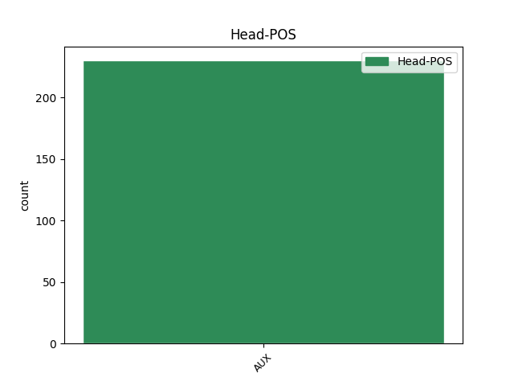

Distribution of features within this leaf


Agreement Rules sorted by frequency.
- When the dependent token is the conjunct(conj) of the head token, and the head token is AUX and the dependent token is AUX.
1 Väkiluku _ _ _ _ 0 _ _ _
2 on olla AUX V Mood=Ind|Number=Sing|Person=3|Tense=Pres|VerbForm=Fin|Voice=Act 0 _ _ _
3 kasvanut _ _ _ _ 0 _ _ _
4 vuoden _ _ _ _ 0 _ _ _
5 aikana _ _ _ _ 0 _ _ _
6 23 000 _ _ _ _ 0 _ _ _
7 hengellä _ _ _ _ 0 _ _ _
8 ja _ _ _ _ 0 _ _ _
9 näin _ _ _ _ 0 _ _ _
10 kasvu _ _ _ _ 0 _ _ _
11 on olla AUX V Mood=Ind|Number=Sing|Person=3|Tense=Pres|VerbForm=Fin|Voice=Act 2 conj _ _
12 ollut _ _ _ _ 0 _ _ _
13 0,4 _ _ _ _ 0 _ _ _
14 prosenttia _ _ _ _ 0 _ _ _
15 . _ _ _ _ 0 _ _ _
1 Vimin _ _ _ _ 0 _ _ _
2 keskeinen _ _ _ _ 0 _ _ _
3 idea _ _ _ _ 0 _ _ _
4 on olla AUX V Mood=Ind|Number=Sing|Person=3|Tense=Pres|VerbForm=Fin|Voice=Act 7 comp:aux _ SpaceAfter=No
5 , _ _ _ _ 0 _ _ _
6 että _ _ _ _ 0 _ _ _
7 ei ei AUX V Number=Sing|Person=3|Polarity=Neg|VerbForm=Fin|Voice=Act 0 _ _ _
8 kumpaakaan _ _ _ _ 0 _ _ _
9 kättä _ _ _ _ 0 _ _ _
10 tarvitse _ _ _ _ 0 _ _ _
11 siirtää _ _ _ _ 0 _ _ _
12 näppäimistöltä _ _ _ _ 0 _ _ _
13 ( _ _ _ _ 0 _ _ _
14 esimerkiksi _ _ _ _ 0 _ _ _
15 hiirelle _ _ _ _ 0 _ _ _
16 ) _ _ _ _ 0 _ _ _
17 minkään _ _ _ _ 0 _ _ _
18 toiminnon _ _ _ _ 0 _ _ _
19 , _ _ _ _ 0 _ _ _
20 kuten _ _ _ _ 0 _ _ _
21 tallentamisen _ _ _ _ 0 _ _ _
22 , _ _ _ _ 0 _ _ _
23 ajaksi _ _ _ _ 0 _ _ _
24 . _ _ _ _ 0 _ _ _
1 Varsinkin _ _ _ _ 0 _ _ _
2 halpatyövomana _ _ _ _ 0 _ _ _
3 laittomat _ _ _ _ 0 _ _ _
4 siirtolaiset _ _ _ _ 0 _ _ _
5 ovat _ _ _ _ 0 _ _ _
6 joustava _ _ _ _ 0 _ _ _
7 työvoimareservi _ _ _ _ 0 _ _ _
8 , _ _ _ _ 0 _ _ _
9 jolla _ _ _ _ 0 _ _ _
10 ei ei AUX V Number=Sing|Person=3|Polarity=Neg|VerbForm=Fin|Voice=Act 0 _ _ _
11 ole _ _ _ _ 0 _ _ _
12 oikeuksia _ _ _ _ 0 _ _ _
13 , _ _ _ _ 0 _ _ _
14 oli olla AUX V Mood=Ind|Number=Sing|Person=3|Tense=Past|VerbForm=Fin|Voice=Act 10 mod _ _
15 kysymyksessä _ _ _ _ 0 _ _ _
16 työturvallisuus _ _ _ _ 0 _ _ _
17 , _ _ _ _ 0 _ _ _
18 työajat _ _ _ _ 0 _ _ _
19 tai _ _ _ _ 0 _ _ _
20 palkat _ _ _ _ 0 _ _ _
21 . _ _ _ _ 0 _ _ _
1 On olla AUX V Mood=Ind|Number=Sing|Person=3|Tense=Pres|VerbForm=Fin|Voice=Act 0 _ _ _
2 meistä _ _ _ _ 0 _ _ _
3 itsestämme _ _ _ _ 0 _ _ _
4 kiinni _ _ _ _ 0 _ _ _
5 , _ _ _ _ 0 _ _ _
6 kuinka _ _ _ _ 0 _ _ _
7 kauas _ _ _ _ 0 _ _ _
8 kantoinen _ _ _ _ 0 _ _ _
9 sen _ _ _ _ 0 _ _ _
10 antama _ _ _ _ 0 _ _ _
11 selviytymisen _ _ _ _ 0 _ _ _
12 , _ _ _ _ 0 _ _ _
13 unelmien _ _ _ _ 0 _ _ _
14 toteuttamisen _ _ _ _ 0 _ _ _
15 ja _ _ _ _ 0 _ _ _
16 kiitollisuuden _ _ _ _ 0 _ _ _
17 tunne _ _ _ _ 0 _ _ _
18 on olla AUX V Mood=Ind|Number=Sing|Person=3|Tense=Pres|VerbForm=Fin|Voice=Act 1 subj _ SpaceAfter=No
19 . _ _ _ _ 0 _ _ _
1 Ei ei AUX V Number=Sing|Person=3|Polarity=Neg|VerbForm=Fin|Voice=Act 4 subj@cop _ _
2 oo _ _ _ _ 0 _ _ _
3 valoo _ _ _ _ 0 _ _ _
4 on olla AUX V Mood=Ind|Number=Sing|Person=3|Tense=Pres|VerbForm=Fin|Voice=Act 0 _ _ _
5 suomalaisen _ _ _ _ 0 _ _ _
6 Popeda-yhtyeen _ _ _ _ 0 _ _ _
7 kymmenes _ _ _ _ 0 _ _ _
8 albumi _ _ _ _ 0 _ _ _
9 . _ _ _ _ 0 _ _ _
Disagree Examples:
1 Jännittävää _ _ _ _ 0 _ _ _
2 , _ _ _ _ 0 _ _ _
3 kun _ _ _ _ 0 _ _ _
4 armeijassa _ _ _ _ 0 _ _ _
5 ollessani _ _ _ _ 0 _ _ _
6 en ei AUX V Number=Sing|Person=1|Polarity=Neg|VerbForm=Fin|Voice=Act 0 _ _ _
7 sulkeisista _ _ _ _ 0 _ _ _
8 pitänyt _ _ _ _ 0 _ _ _
9 , _ _ _ _ 0 _ _ _
10 mutta _ _ _ _ 0 _ _ _
11 nyt _ _ _ _ 0 _ _ _
12 toiminta _ _ _ _ 0 _ _ _
13 oli olla AUX V Mood=Ind|Number=Sing|Person=3|Tense=Past|VerbForm=Fin|Voice=Act 6 conj _ _
14 ihan _ _ _ _ 0 _ _ _
15 hauskaa _ _ _ _ 0 _ _ _
16 . _ _ _ _ 0 _ _ _
1 Kaksi _ _ _ _ 0 _ _ _
2 kesää _ _ _ _ 0 _ _ _
3 olen olla AUX V Mood=Ind|Number=Sing|Person=1|Tense=Pres|VerbForm=Fin|Voice=Act 0 _ _ _
4 haaveillut _ _ _ _ 0 _ _ _
5 vanhanaikaisten _ _ _ _ 0 _ _ _
6 puisten _ _ _ _ 0 _ _ _
7 kattotikkaiden _ _ _ _ 0 _ _ _
8 tekemisestä _ _ _ _ 0 _ _ _
9 tai _ _ _ _ 0 _ _ _
10 parin _ _ _ _ 0 _ _ _
11 puutarhahuonekalun _ _ _ _ 0 _ _ _
12 rakentamisesta _ _ _ _ 0 _ _ _
13 , _ _ _ _ 0 _ _ _
14 mutta _ _ _ _ 0 _ _ _
15 vielä _ _ _ _ 0 _ _ _
16 ei ei AUX V Number=Sing|Person=3|Polarity=Neg|VerbForm=Fin|Voice=Act 3 conj _ _
17 ole _ _ _ _ 0 _ _ _
18 ehtinyt _ _ _ _ 0 _ _ _
19 ... _ _ _ _ 0 _ _ _
1 Olemme olla AUX V Mood=Ind|Number=Plur|Person=1|Tense=Pres|VerbForm=Fin|Voice=Act 0 _ _ _
2 kauan _ _ _ _ 0 _ _ _
3 puhuneet _ _ _ _ 0 _ _ _
4 omakotitalosta _ _ _ _ 0 _ _ _
5 , _ _ _ _ 0 _ _ _
6 mutta _ _ _ _ 0 _ _ _
7 kumpikaan _ _ _ _ 0 _ _ _
8 ei ei AUX V Number=Sing|Person=3|Polarity=Neg|VerbForm=Fin|Voice=Act 1 conj _ _
9 ole _ _ _ _ 0 _ _ _
10 ihan _ _ _ _ 0 _ _ _
11 varma _ _ _ _ 0 _ _ _
12 , _ _ _ _ 0 _ _ _
13 haluaisiko _ _ _ _ 0 _ _ _
14 sellaisen _ _ _ _ 0 _ _ _
15 sittenkään _ _ _ _ 0 _ _ _
16 . _ _ _ _ 0 _ _ _
1 Kaikista _ _ _ _ 0 _ _ _
2 mieluiten _ _ _ _ 0 _ _ _
3 olisin olla AUX V Mood=Cnd|Number=Sing|Person=1|VerbForm=Fin|Voice=Act 0 _ _ _
4 viettänyt _ _ _ _ 0 _ _ _
5 päiväni _ _ _ _ 0 _ _ _
6 makuupussissa _ _ _ _ 0 _ _ _
7 , _ _ _ _ 0 _ _ _
8 mutta _ _ _ _ 0 _ _ _
9 kun _ _ _ _ 0 _ _ _
10 siinä _ _ _ _ 0 _ _ _
11 on olla AUX V Mood=Ind|Number=Sing|Person=0|Tense=Pres|VerbForm=Fin|Voice=Act 3 conj _ _
12 hieman _ _ _ _ 0 _ _ _
13 vaikea _ _ _ _ 0 _ _ _
14 kävellä _ _ _ _ 0 _ _ _
15 . _ _ _ _ 0 _ _ _
16 ;) _ _ _ _ 0 _ _ _
1 Tuotteista _ _ _ _ 0 _ _ _
2 voit voida AUX V Mood=Ind|Number=Sing|Person=2|Tense=Pres|VerbForm=Fin|Voice=Act 0 _ _ _
3 lukea _ _ _ _ 0 _ _ _
4 lisää _ _ _ _ 0 _ _ _
5 ja _ _ _ _ 0 _ _ _
6 niistä _ _ _ _ 0 _ _ _
7 voi voida AUX V Mood=Ind|Number=Sing|Person=0|Tense=Pres|VerbForm=Fin|Voice=Act 2 conj _ _
8 tilata _ _ _ _ 0 _ _ _
9 Ethnic _ _ _ _ 0 _ _ _
10 Cosmeticsin _ _ _ _ 0 _ _ _
11 kotisivulta _ _ _ _ 0 _ _ _
12 . _ _ _ _ 0 _ _ _
13 :) _ _ _ _ 0 _ _ _